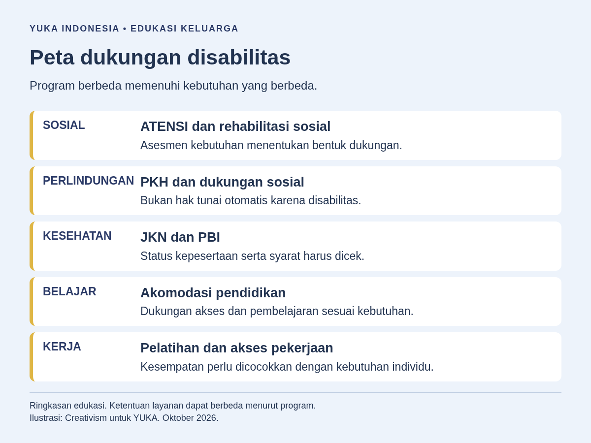
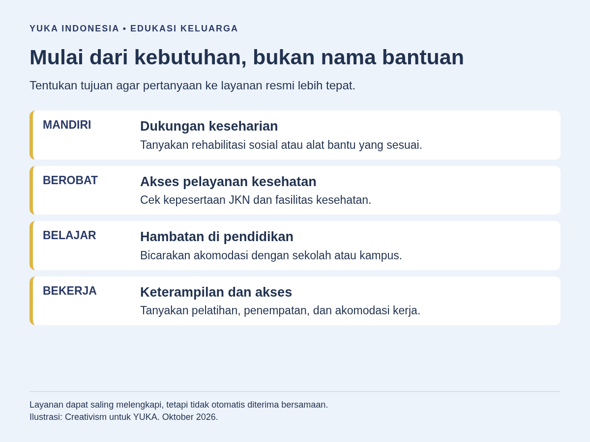
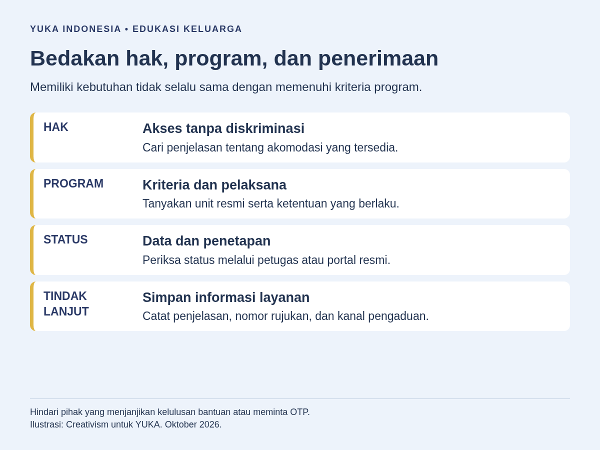

Program pemerintah untuk penyandang disabilitas mencakup rehabilitasi sosial ATENSI, bantuan sosial bersyarat PKH bagi keluarga yang memenuhi ketentuan, bantuan iuran JKN melalui PBI, dukungan pendidikan, serta pelatihan dan layanan ketenagakerjaan. Program daerah dapat melengkapi dukungan tersebut. Tidak semuanya berupa uang, dan status disabilitas tidak otomatis menjamin seseorang memperoleh setiap bantuan.
Pilihan dukungan perlu dilihat sepanjang kehidupan, dari anak yang membutuhkan akses belajar hingga orang dewasa yang mencari pekerjaan atau lansia yang memerlukan dukungan sehari-hari. Artikel ini memetakan fungsi program, bukan mengulang prosedur pengajuan. Untuk fokus anak, tersedia panduan dukungan pemerintah bagi ABK.
Memahami pengertian disabilitas dan ragam disabilitas membantu melihat hambatan lingkungan, bukan sekadar diagnosis. Penyandang disabilitas adalah pemegang hak dan perlu dilibatkan dalam menentukan dukungan yang diinginkan.
Apa Saja Kelompok Program Pemerintah untuk Penyandang Disabilitas?
Bedakan layanan pemenuhan hak dengan bantuan yang memiliki sasaran penerima tertentu. Akses belajar, komunikasi yang dapat dipahami, dan kesempatan kerja tanpa diskriminasi tidak boleh dianggap sebagai hadiah. Sebaliknya, bantuan sosial atau bantuan iuran memiliki ketentuan kepesertaan yang harus dipenuhi. Bacaan tentang hak penyandang disabilitas memberi konteks untuk membicarakan perbedaan ini.
Matriks berikut merupakan peta awal, bukan daftar manfaat yang pasti tersedia bagi setiap orang. Kolom penanggung jawab menunjukkan tempat untuk menanyakan layanan, bukan jaminan bahwa seluruh urusan selesai pada satu kantor.
| Program atau layanan | Kebutuhan utama | Pihak yang dapat ditanya | Batas penting |
|---|---|---|---|
| ATENSI | Keberfungsian sosial, dukungan keluarga, aksesibilitas, dan keterampilan | Dinas Sosial dan unit rehabilitasi sosial Kemensos | Bentuk layanan ditentukan melalui asesmen dan perencanaan |
| PKH | Perlindungan keluarga miskin atau rentan melalui bantuan bersyarat | Dinas Sosial dan pendamping PKH | Memerlukan pemenuhan kriteria dan penetapan penerima |
| PBI JKN | Dukungan pembayaran iuran jaminan kesehatan | Dinas Sosial dan BPJS Kesehatan | Bukan uang tunai dan bukan jaminan seluruh layanan ditanggung |
| Pendidikan | Akses belajar dan akomodasi sesuai kebutuhan peserta didik | Sekolah, kampus, dan dinas pendidikan | Dukungan konkret perlu dibicarakan dengan penyelenggara |
| Ketenagakerjaan | Pelatihan, informasi kerja, pendampingan, dan pengembangan usaha | Dinas tenaga kerja, ULD, dan lembaga pelatihan | Mengikuti persyaratan program, bukan jaminan diterima bekerja |
Seorang penyandang disabilitas dapat memiliki kebutuhan pada beberapa baris sekaligus. Namun, dukungan yang saling melengkapi bukan berarti kepesertaan otomatis berpindah dari satu program ke program lain. Setiap penyelenggara perlu menjelaskan kewenangan, sasaran, dan hasil layanan yang dapat diberikan.

Apa Fungsi ATENSI dalam Rehabilitasi Sosial?
ATENSI adalah Asistensi Rehabilitasi Sosial. Berdasarkan Permensos Nomor 15 Tahun 2025, pendekatannya berbasis keluarga, komunitas, dan/atau residensial. Tujuannya mencapai keberfungsian sosial, sehingga pembahasannya tidak terbatas pada penyerahan bantuan atau pemberian uang.
Bentuk layanan mencakup dukungan kebutuhan hidup layak, perawatan sosial atau pengasuhan anak, dukungan keluarga, terapi, pelatihan vokasional atau pembinaan kewirausahaan, bantuan atau asistensi sosial, serta dukungan aksesibilitas. Daftar tersebut menggambarkan ruang lingkup program. Seseorang tidak otomatis menerima semua komponennya sekaligus.
Misalnya, hambatan berpartisipasi dalam kegiatan sehari-hari dapat berkaitan dengan alat bantu, dukungan keluarga, atau lingkungan yang belum aksesibel. Asesmen diperlukan untuk menentukan hubungan antara kebutuhan tersebut dan layanan yang sesuai. Pilihan dukungan sebaiknya mempertimbangkan keinginan pengguna, kondisi rumah, serta kegiatan yang ingin diikuti.
Rehabilitasi sosial juga perlu dibedakan dari rehabilitasi medis. Keduanya dapat saling mendukung, tetapi tujuan, tenaga pelaksana, dan jalur layanan tidak selalu sama. Menyebut terapi dalam ruang lingkup ATENSI bukan janji bahwa semua jenis terapi tersedia gratis di setiap wilayah. Tanyakan jenis dukungan yang benar-benar diselenggarakan dan bagaimana hasilnya dievaluasi.
Untuk alat bantu, diskusikan kecocokan, penggunaan, pemeliharaan, dan dukungan setelah penyerahan. Keberhasilan tidak cukup dinilai dari adanya barang, tetapi dari apakah barang itu membantu pengguna beraktivitas dengan nyaman dan aman.
Siapa yang Dapat Memperoleh Dukungan PKH?
Program Keluarga Harapan atau PKH merupakan bantuan sosial bersyarat berupa uang kepada keluarga miskin dan/atau rentan. Permensos Nomor 8 Tahun 2026 tentang PKH mengatur kepesertaan berdasarkan peringkat kesejahteraan keluarga serta komponen kesehatan dan/atau pendidikan. Penyandang disabilitas disebut dalam komponen kesehatan.
Artinya, PKH bukan tunjangan universal bagi semua penyandang disabilitas. Keberadaan anggota keluarga dengan disabilitas perlu dibaca bersama kondisi keluarga, ketentuan kepesertaan, data yang digunakan, dan keputusan penetapan. Terdaftar dalam suatu basis data juga tidak sama dengan sudah ditetapkan sebagai penerima manfaat.
Selain bantuan, penerima PKH memiliki hak atas pendampingan dan fasilitasi pelayanan kesehatan atau pendidikan sesuai ketentuan. Ada pula kewajiban program yang perlu dijelaskan oleh pendamping. Jika hambatan mobilitas atau komunikasi membuat keluarga sulit mengikuti kegiatan, diskusikan kebutuhan akses tersebut, bukan menyimpulkan sendiri bahwa kewajiban dapat diabaikan.
Hindari memakai tabel nominal atau syarat dari unggahan lama sebagai kepastian. Artikel ini tidak menetapkan besaran, jadwal pencairan, maupun kelayakan pribadi. Peraturan PKH tahun 2026 menggantikan aturan tahun 2018, sehingga penjelasan lama perlu dicocokkan kembali dengan ketentuan yang berlaku.
Apa Perbedaan PBI JKN dengan Bantuan Tunai?
Penerima Bantuan Iuran atau PBI dalam Jaminan Kesehatan Nasional berkaitan dengan pembayaran iuran, bukan pemberian uang kepada peserta. Penjelasan Kementerian Kesehatan tentang JKN menerangkan bahwa pemerintah membayarkan iuran bagi fakir miskin dan orang tidak mampu yang terdaftar sebagai peserta PBI. Prinsip ini perlu dibedakan dari bantuan biaya hidup.
Status disabilitas saja tidak membuktikan kepesertaan PBI. Orang yang sudah memiliki JKN juga dapat berada dalam segmen kepesertaan berbeda, misalnya melalui pekerjaan atau pembayaran mandiri. Karena itu, pertanyaan awal yang berguna adalah apakah kepesertaan aktif, siapa pembayar iuran, dan fasilitas kesehatan mana yang tercatat.
Manfaat layanan tetap mengikuti ketentuan JKN, kebutuhan medis, dan prosedur yang berlaku. Jangan menyimpulkan seluruh terapi, alat bantu, transportasi, atau layanan di semua tempat pasti ditanggung. Untuk kebutuhan tertentu, minta penjelasan fasilitas kesehatan dan BPJS Kesehatan mengenai manfaat serta jalur layanan yang relevan.
Pembayaran iuran dan aksesibilitas fasilitas merupakan persoalan berbeda. Peserta tetap dapat memerlukan bantuan komunikasi, akses kursi roda, atau informasi yang mudah dipahami. Sampaikan kebutuhan itu kepada penyelenggara layanan. Keluarga boleh membantu, tetapi komunikasi dan keputusan tetap perlu menghormati pengguna layanan.
Dukungan Pendidikan Apa yang Perlu Diperhatikan?
Dukungan pendidikan mencakup kesempatan belajar dan penyesuaian yang memungkinkan peserta didik berpartisipasi. UU Nomor 8 Tahun 2016, terutama Pasal 40 dan 42, mengatur pendidikan inklusif, pendidikan khusus, dan dukungan ULD pendidikan. Layanan pada berbagai jenjang perlu dipertimbangkan berdasarkan kebutuhan serta pilihan peserta didik, bukan anggapan bahwa satu jenis sekolah cocok untuk semua.
Akomodasi yang layak dapat dibicarakan melalui contoh hambatan konkret: materi sulit diakses, ruang kelas tidak terjangkau, instruksi hanya disampaikan lewat satu cara, atau bentuk evaluasi tidak memungkinkan peserta didik menunjukkan kemampuan. Contoh penyesuaian harus dibahas sesuai kebutuhan individu, bukan dijadikan daftar fasilitas yang dijamin seragam.
Di sekolah, pembicaraan dapat mencakup cara komunikasi, bahan belajar, penyesuaian tugas, dan evaluasi dukungan. Panduan pendidikan inklusi membantu memahami arah layanan, sedangkan program pembelajaran individual memberi konteks perencanaan pembelajaran. Keduanya bukan bukti bahwa bantuan biaya sekolah otomatis diberikan.
Pada perguruan tinggi, tanyakan akses materi, pelaksanaan ujian, fasilitas kampus, dan layanan pendampingan yang tersedia. Bacaan persiapan melanjutkan studi ke universitas dapat membantu merumuskan kebutuhan transisi. Beasiswa atau bantuan pendidikan memiliki seleksi dan ketentuan tersendiri; jangan menyamakannya dengan hak meminta penyesuaian akses belajar.
Ukuran dukungan yang baik adalah kesempatan mengikuti pembelajaran secara bermakna. Kehadiran di kelas tanpa materi yang dapat diakses belum menyelesaikan hambatan. Libatkan peserta didik dalam menilai penyesuaian mana yang membantu.

Bagaimana Program Pelatihan, Pekerjaan, dan Usaha Berperan?
Bagi remaja yang memasuki usia kerja dan orang dewasa, dukungan dapat mencakup pelatihan keterampilan, informasi lowongan, pendampingan kerja, serta pengembangan usaha. Kerangka nasional mengakui kesempatan mengikuti pelatihan yang inklusif dan mudah diakses. PP Nomor 60 Tahun 2020 mengatur ULD ketenagakerjaan pada dinas yang menyelenggarakan urusan ketenagakerjaan di pemerintah daerah.
ULD tidak boleh dipahami sebagai loket yang pasti memberikan pekerjaan. Perannya berkaitan dengan informasi dan pendampingan tenaga kerja maupun pemberi kerja. Tanyakan layanan yang sudah berjalan di dinas tenaga kerja setempat, termasuk dukungan komunikasi, hubungan dengan lembaga pelatihan, dan pendampingan yang tersedia.
Pelatihan perlu dipilih berdasarkan minat, tujuan kerja, akses tempat, serta dukungan selama belajar. Sertifikat saja belum menjawab apakah peserta memperoleh keterampilan yang berguna. Tanyakan bentuk praktik, penyesuaian pembelajaran, keselamatan, dan hubungan pelatihan dengan peluang kerja nyata. Persyaratan teknis tetap perlu diperiksa pada masing-masing program.
Artikel pilihan pekerjaan bagi penyandang disabilitas memberi konteks pencocokan kemampuan dan kebutuhan kerja. Untuk memahami dukungan setelah penempatan, baca pendampingan kerja melalui supported employment. Pendekatan tersebut tidak boleh diasumsikan tersedia pada setiap ULD atau perusahaan.
Dalam kewirausahaan, kebutuhan tidak berhenti pada modal atau peralatan. Pelatihan produksi, akses pemasaran, pencatatan keuangan, dan pendampingan dapat sama pentingnya. ATENSI memiliki ruang lingkup pembinaan kewirausahaan, tetapi bentuk dukungan bagi seseorang mengikuti asesmen serta perencanaan layanan. Tidak ada jaminan penghasilan tertentu setelah mengikuti program.
Apa Perbedaan Kerangka Nasional dan Pelaksanaan Daerah?
Kerangka nasional menetapkan arah hak, tugas penyelenggara, dan ketentuan program. Pelaksanaan daerah menjawab pertanyaan praktis tentang layanan yang beroperasi, unit penanggung jawab, jangkauan wilayah, serta dukungan yang tersedia. Dua lapisan ini berhubungan, tetapi tidak boleh disamakan.
Sebuah kabupaten dapat memiliki kegiatan pelatihan atau dukungan mobilitas yang berbeda dari kabupaten lain. Informasi tentang layanan daerah tertentu bukan bukti bahwa program identik tersedia secara nasional. Periksa wilayah sasaran, tanggal pengumuman, serta apakah kegiatan masih berlangsung atau hanya laporan kegiatan terdahulu.
Di sisi lain, keterbatasan pelaksanaan tidak menghapus pentingnya pemenuhan hak. Jika layanan belum tersedia atau belum aksesibel, penyandang disabilitas dapat meminta penjelasan mengenai rujukan, penyesuaian, dan tindak lanjut yang berada dalam kewenangan instansi. Hindari menerima jawaban umum tanpa mengetahui siapa penanggung jawab persoalannya.
Bagaimana Memilih Dukungan Sepanjang Usia?
Pada masa anak, pembahasan sering berpusat pada belajar, kesehatan, pengasuhan, dan dukungan keluarga. Pada masa transisi menuju dewasa, pilihan pendidikan lanjutan, keterampilan, serta pengambilan keputusan semakin penting. Orang dewasa dapat memerlukan akses kerja atau dukungan untuk tetap bekerja, sedangkan lansia mungkin memiliki kebutuhan perawatan sosial dan mobilitas yang berubah.
Usia membantu memetakan kegiatan, tetapi bukan satu-satunya penentu program. Orang dewasa yang ingin kembali belajar tidak perlu dianggap selesai dengan pendidikan. Lansia juga tetap memiliki pilihan dan hak berpartisipasi. Mulailah dari kegiatan yang ingin dilakukan dan hambatan yang menghalanginya.
Contoh hipotetis: seseorang membutuhkan akses belajar sekaligus dukungan mobilitas. Masalah materi pembelajaran dibicarakan dengan penyelenggara pendidikan, sementara kebutuhan alat bantu ditanyakan kepada layanan sosial atau kesehatan yang relevan. Menggabungkan tujuan dukungan lebih berguna daripada mencari satu program yang diharapkan menyelesaikan semuanya.
Bagaimana Menilai Informasi dan Kualitas Layanan?
Informasi program yang berguna menjelaskan tujuan, sasaran, penanggung jawab, dan batas layanannya. Berita penyerahan bantuan membuktikan kegiatan pada konteks tertentu, bukan membuktikan setiap pembaca berhak menerima bantuan yang sama. Jangan membagikan identitas atau catatan kesehatan hanya karena seseorang mengaku memiliki jalur cepat.
- Kesesuaian: apakah program menjawab hambatan yang ingin diatasi?
- Aksesibilitas: apakah tempat, informasi, dan komunikasi dapat digunakan?
- Kejelasan: apakah sasaran dan batas manfaat dijelaskan tanpa janji pasti?
- Keberlanjutan: apakah ada evaluasi, pemeliharaan, atau rujukan setelah layanan?
- Partisipasi: apakah pilihan pengguna didengar dan data pribadinya dilindungi?
Pertanyaan tersebut membantu menilai mutu dukungan, bukan menggantikan keputusan petugas. Bila kebutuhan sudah dipetakan dan keluarga ingin mempelajari administrasi untuk anak, gunakan panduan terpisah tentang pengajuan bantuan pemerintah bagi anak disabilitas. Dengan begitu, gambaran program dan prosedur tidak tercampur.

Pertanyaan yang Sering Diajukan
Apakah semua penyandang disabilitas otomatis mendapat bantuan pemerintah?
Tidak. Bantuan sosial, bantuan iuran, dan layanan berbasis asesmen memiliki ketentuan masing-masing. Status disabilitas bukan jaminan memperoleh semua program. Namun, pembahasan tentang kelayakan bantuan perlu dibedakan dari hak atas akses layanan dan perlakuan tanpa diskriminasi.
Apakah ATENSI sama dengan PKH?
Tidak. ATENSI merupakan layanan rehabilitasi sosial dengan berbagai bentuk dukungan sesuai kebutuhan. PKH merupakan bantuan sosial bersyarat bagi keluarga yang memenuhi ketentuan dan telah ditetapkan. Kedua program dapat memiliki fungsi yang saling melengkapi, tetapi kepesertaannya tidak otomatis sama.
Apakah PBI JKN memberikan uang kepada peserta?
Tidak. PBI berkaitan dengan pembayaran iuran jaminan kesehatan oleh pemerintah bagi peserta yang memenuhi ketentuan. Pemanfaatan layanan tetap mengikuti aturan JKN. Jangan menganggap kepesertaan PBI berarti semua terapi atau alat bantu pasti ditanggung.
Apakah program pemerintah hanya untuk anak disabilitas?
Tidak. Dukungan mencakup berbagai tahap kehidupan, termasuk pendidikan, rehabilitasi sosial, keterampilan, pekerjaan, dan kebutuhan lansia. Kesesuaian program mengikuti sasaran layanan serta kebutuhan individu. Artikel ini membahas peta lintas usia, bukan daftar pengajuan khusus anak.
Bagaimana jika program yang ditemukan tidak tersedia di daerah saya?
Tanyakan kepada instansi sesuai bidangnya apakah ada rujukan atau bentuk dukungan lain. Pastikan informasi yang ditemukan memang berlaku untuk wilayah Anda dan masih berjalan. Program lokal tidak selalu tersedia secara nasional, sedangkan kebutuhan akses tetap perlu disampaikan kepada penyelenggara layanan.
Kesimpulan
Program pemerintah untuk penyandang disabilitas bukan satu paket bantuan seragam. ATENSI, PKH, PBI JKN, pendidikan, dan ketenagakerjaan mempunyai fungsi serta batas berbeda. Cocokkan dukungan dengan tujuan hidup pengguna, bedakan hak akses dari kriteria bantuan, dan konfirmasikan pelaksanaan kepada instansi yang berwenang. YUKA mendukung edukasi dan pendampingan pendidikan, tetapi tidak menetapkan penerima atau menjamin manfaat program pemerintah.
Bacaan Terkait
Sumber dan Referensi
- Permensos 15/2025: Asistensi Rehabilitasi Sosial
- Permensos 8/2026: Program Keluarga Harapan
- Kementerian Kesehatan: Jaminan Kesehatan Nasional
- UU 8/2016: Penyandang Disabilitas
- PP 60/2020: ULD Bidang Ketenagakerjaan
Catatan: Artikel ini bersifat edukasi umum dan bukan pengganti konsultasi dengan psikolog, tenaga kesehatan, atau petugas layanan sosial resmi. Sumber resmi diperiksa 9 Oktober 2026. Permensos 15/2025, Permensos 8/2026, UU 8/2016, dan PP 60/2020 berstatus berlaku pada basis data peraturan.go.id. Informasi ini bukan penetapan kelayakan, jadwal pencairan, nominal bantuan, atau jaminan penerimaan program.